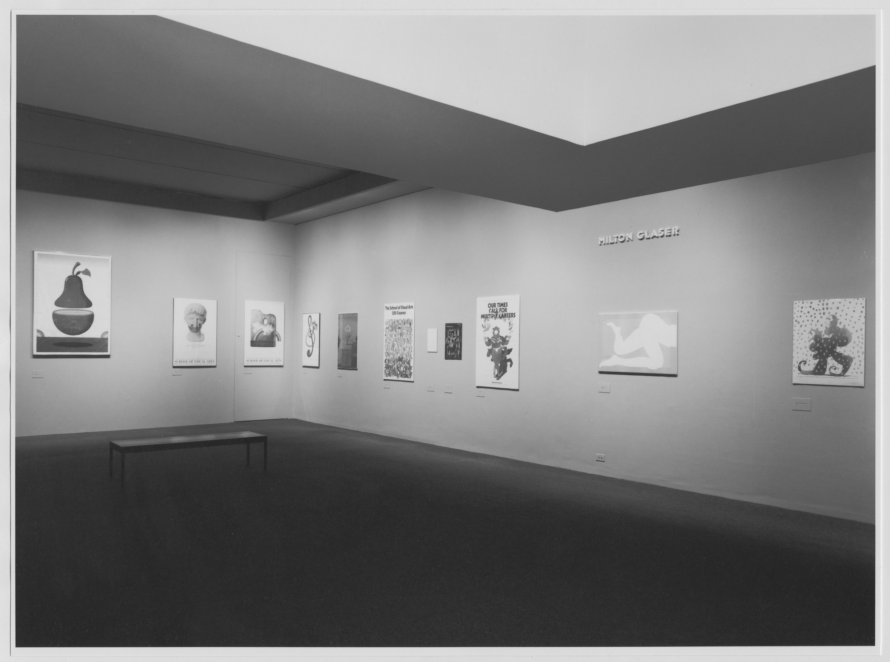
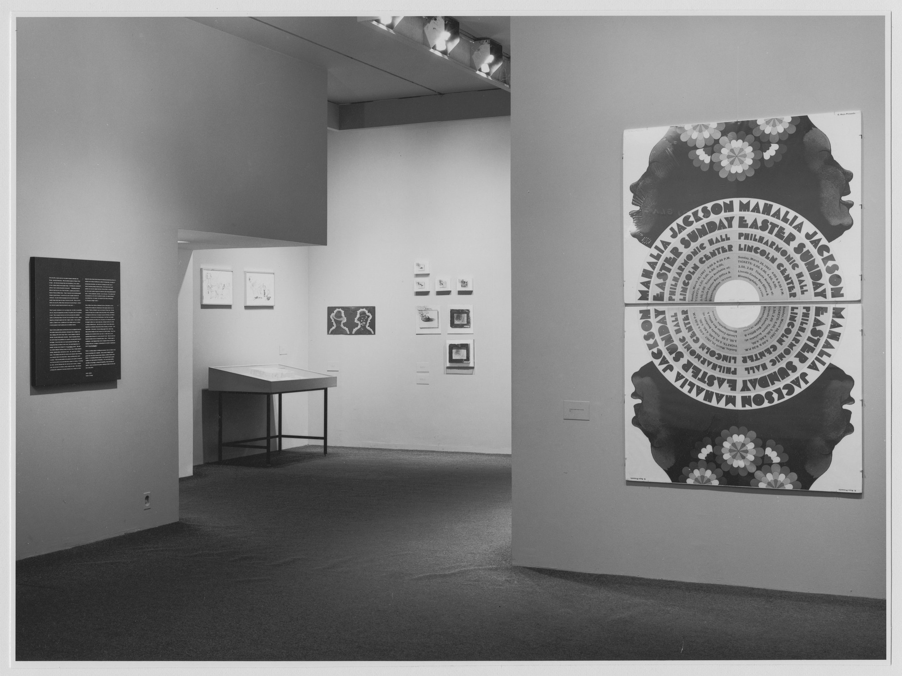
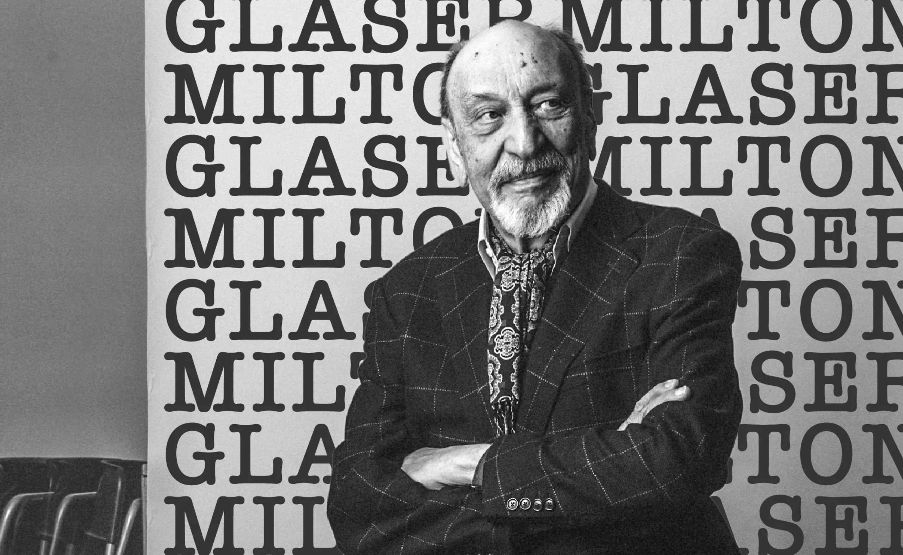

Achievements
In 2009, he was the first graphic
designer to receive the National Medal
of the Arts award. And in 2004, he received
the Lifetime Achievement Award from the
Smithsonian Cooper-Hewitt, National
Design Museum. When he went to college in
Italy in the 1950s, he received a Fulbright
grant to study in Bologna, Italy. Many years
later in 2011, he received the Fulbright
Association Lifetime Achievement Award.
His work has been displayed at the
Museum of Modern Art in New York,
Philadelphia Museum of Art,
Lincoln Center Gallery, AIGA
Gallery in New York, and the Centre
Georges Pomidou in Paris.


